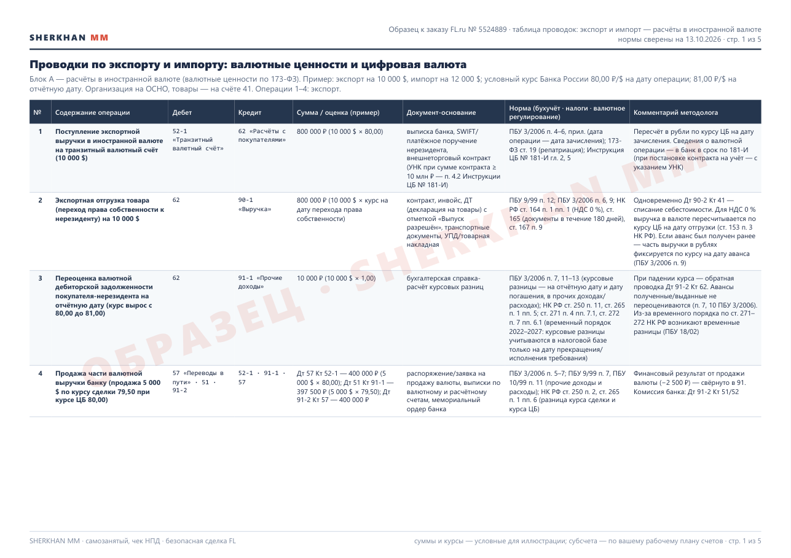
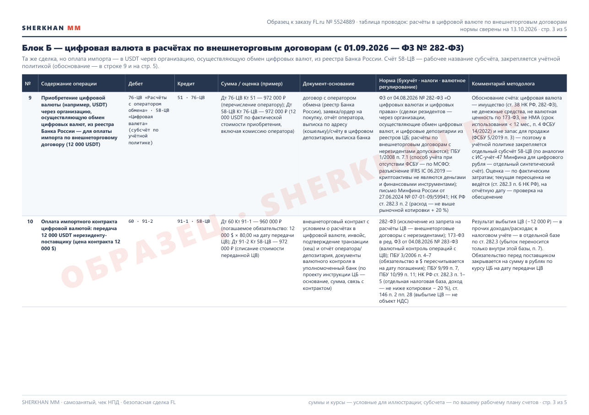
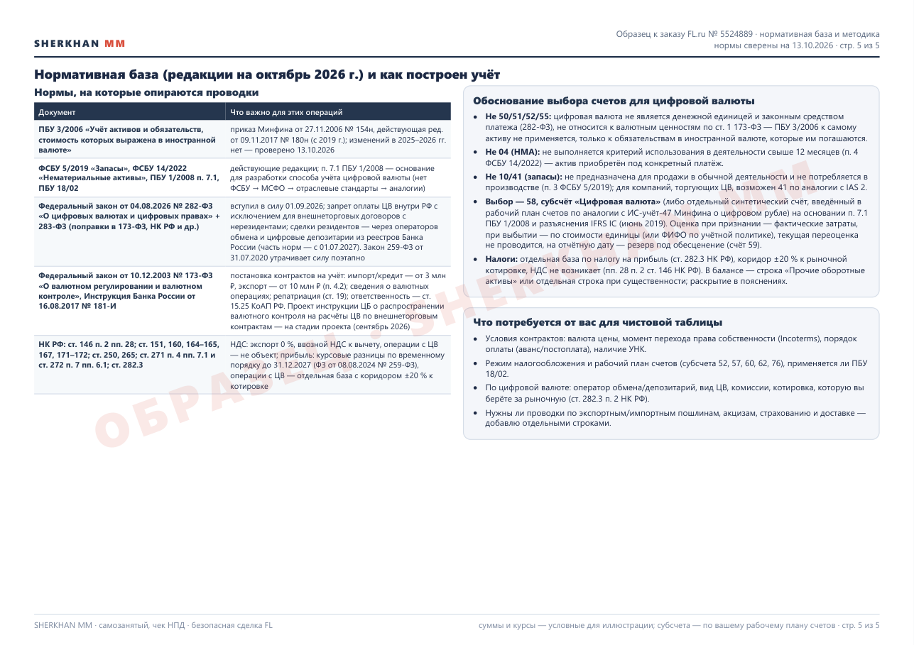

Образец по заказу FL.ru № 5524889: таблица проводок по экспорту и импорту — 13 типовых операций в двух блоках. Блок А — расчёты в иностранной валюте: выручка на транзитный счёт, отгрузка под НДС 0 %, переоценка и курсовые разницы, продажа и покупка валюты, аванс нерезиденту, ввоз с таможенными платежами и НДС, погашение задолженности. Блок Б — цифровая валюта в расчётах по внешнеторговым договорам после 1 сентября 2026 года (ФЗ № 282-ФЗ): покупка через оператора обмена, оплата импорта, выручка в USDT, продажа за рубли, комиссии сети, обесценение — с обоснованием выбора счетов. По каждой строке — Дт/Кт, пример суммы, документ-основание, ссылки на ПБУ 3/2006, ФСБУ 5/2019, НК РФ (ст. 146, 164–165, 171–172, 250, 265, 271–272, 282.3), 173-ФЗ, Инструкцию 181-И. Редакции норм сверены на 13.10.2026; суммы и курсы условные.


